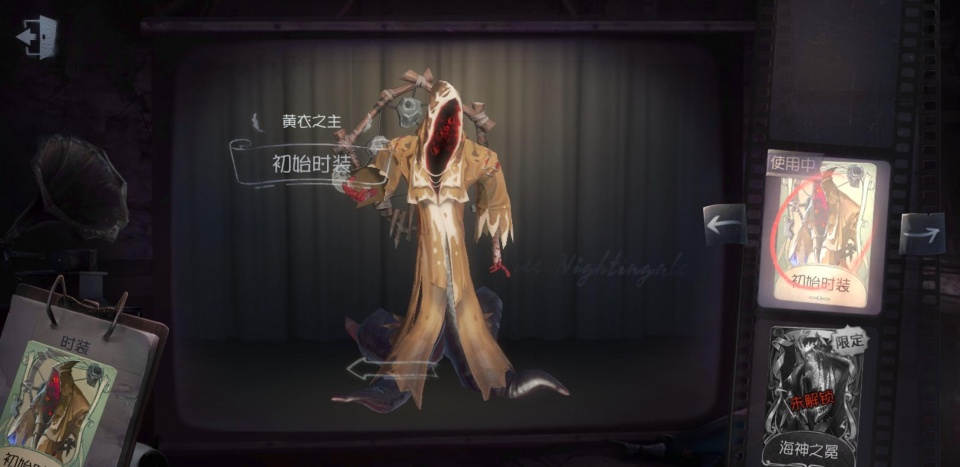
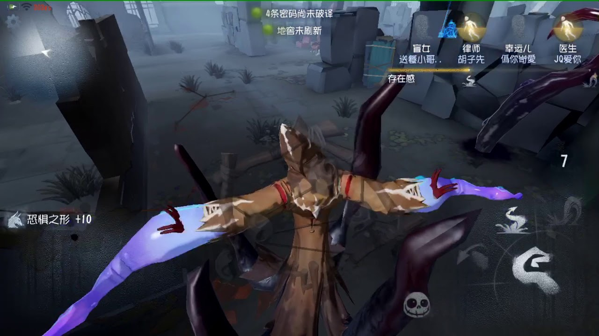

黃衣之主

【人物介紹】
名字：哈斯塔
曾有一位穿著黃袍看不清面孔的使者出現，預言某個王朝即將到來的巨大災難，人們稱他為黃衣之主，不可名狀者。他是災難和苦痛的化身，但那些好奇心旺盛的人總是試圖尋找他的蹤跡，期望借此尋求世界真實面貌的啟示。
【能力介紹】
深淵之觸：召喚深淵之觸降臨，長按技能按鍵移動到選定位置後釋放深淵之觸，但在有求生者坐上的狂歡之椅附近，深淵之觸會消弭得更快。
噩夢侵襲：支配附近的深淵之觸行動，長按技能按鍵選取視線中心的深淵之觸向其最近的求生者砸擊。
噩夢凝視 ：可選取求生者為目標進行凝視，被選中的求生者在20秒內會被附近的深淵之觸主動攻擊，並會額外增加噩夢侵襲15秒冷卻時間。
恐懼之形：當求生者在警戒半徑停留過久、受擊、被巡視者咬中、校準失敗、隊友倒地或坐上狂歡之椅時會產生恐懼，將吸引深淵之觸生成，亦可驅使深淵之觸砸擊附近的求生者，但在有求生者坐上的狂歡之椅附近，深淵之觸會消弭得更快。
